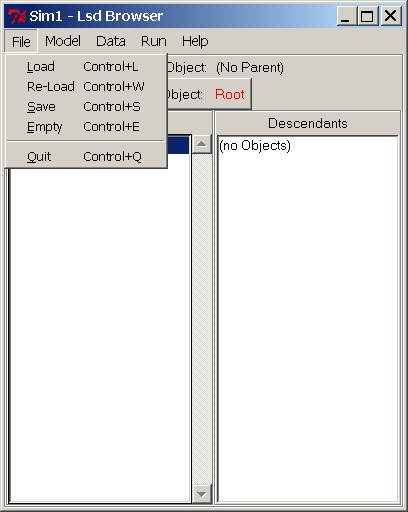

Menu File
This menu deals with the configuration files to load, save or discard.

Menu "File" Entries:
(Menu File)
Load
Shortcut: control+l
Cause the system to load a previously saved configuration ( by default,
files with extensions "lsd").
A configuration contains all the information necessary to run a
simulation,
but the equations whose computational content is embedded in the Lsd
model
program (see the FAQ on configuration).
The configuration file name, after the loading, appears in the header
of the Browser window.
This command cause the system to re-load the current configuration.
It is normally used after a simulation run before running another
simulation
exercise, possibly changing some parameterization.
This command is frequently used because Lsd does not allow to run a
simulation immediatly after another. This is because the Lsd model
program
stores in memory the model configuration resulting at the end of the
simulation,
which normally is not suited to start a new simulation.
Save the current configuration in a Lsd model file. In general,
users
do not need to save a configuration since it is automatically saved
just
before running a simulation, using the same file name of the
configuration
file previously loaded. Therefore, after a simulation run the
configuration
file is updated with the changes possibly made before running the
simulation.
Therefore, this command is used in case one wants to run a simulation
with different initializations from the lastly loaded configuration.
There is also another case in which this command is used. After a
simulation
run a Lsd model program contains, as configuration, the values obtained
during the very last time step of the simulation. Lsd does not allow to
launch a simulation with such configuration (it would overwrite the
configuration
file from which the original simulation was obtained). However, users
can
sabe the last step configuration with a different name, and then load
it
as a new configuration, being therefore able to virtually "extend" a
simulation
beyond the time steps originally planned.
(Menu File)Empty
Shortcut control+e
Empty the system from the configuration currently loaded.
(Menu File) Quit
Shortcuts: control+Q
Exit Lsd.